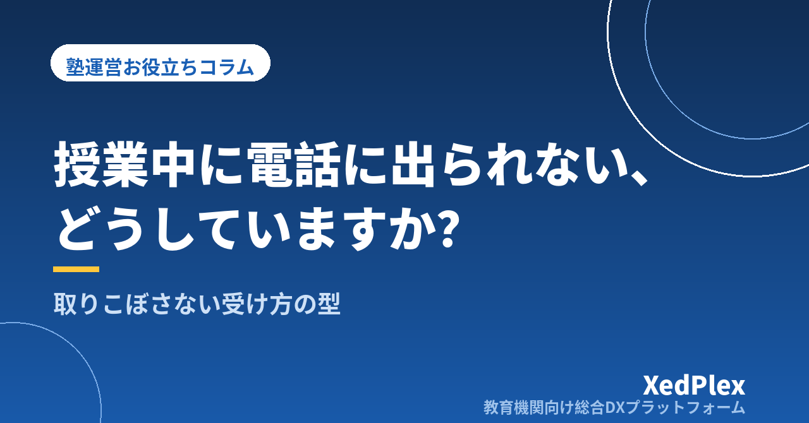

授業中に電話に出られない個人塾の電話対応｜問い合わせ・欠席連絡を取りこぼさない受け方と折り返しの型

生徒に説明している最中に、教室の電話が鳴る。出れば授業が止まり、出なければ「新しい問い合わせだったかもしれない」と気になって集中できない。授業が終わって着信履歴を見ると、知らない番号が2件。折り返したらもうつながらなかった──。ひとりで、あるいは少人数で教室を回している塾長なら、一度は経験のある場面ではないでしょうか。
個人塾にかかってくる電話は、ちょうど授業をしている夕方から夜に集中しがちです。塾長が教える人と受付を兼ねている以上、「全部その場で出る」ことは現実的ではありません。かといって出ないままにすると、入塾につながる問い合わせや、当日の欠席連絡を取りこぼしてしまいます。
この記事では、「授業中は電話に出ない」ことを前提にしたうえで、それでも大事な連絡を落とさないための受け方と折り返しの型を整理します。
授業中に鳴る電話は、だいたい4種類に分けられる
まずは、ふだんかかってくる電話の中身を分けてみます。中身によって、急ぎ度も、電話以外で受けられるかどうかも違います。
| 種類 | 例 | 急ぎ度 | 電話以外で受けられるか |
|---|---|---|---|
| ① 新規の問い合わせ | 体験授業の希望、料金や空き状況の確認 | 当日中に折り返したい | Webフォーム・メールなどで一部受けられる |
| ② 欠席・遅刻の連絡 | 「今日は熱があるので休みます」 | 授業開始までに把握したい | 文字の連絡で受けられることが多い |
| ③ 事務的な問い合わせ | 振替の日程、請求額、講習の日程 | 翌日でも困らないことが多い | メッセージやお知らせで代替しやすい |
| ④ 緊急の連絡 | 迎えの時間・人の変更、帰宅していないという確認 | すぐに把握する必要がある | 電話が向いている |
こうして並べると、本当に「その場で電話に出る必要がある」のは④の緊急連絡くらいだと分かります。①は当日中の折り返しで間に合い、②と③は、そもそも電話以外の入口を用意すれば電話の本数自体を減らせます。
1〜2週間、授業中にかかってきた電話（着信履歴と留守電）を、上の4種類のどれだったかメモしてみてください。多くの塾では②と③が大半を占めていて、そこを電話以外に移すだけで、授業中の着信がかなり静かになります。
電話以外の「入口」を用意して、電話そのものを減らす
電話対応をラクにする近道は、上手に出ることではなく、電話をかけなくても済む入口を先に用意しておくことです。種類ごとに考えてみましょう。
欠席・遅刻の連絡は「文字で、締め時刻つき」で受ける
欠席連絡は、保護者にとっても「電話をかけるほどではないけれど、伝えないといけない」連絡です。メールや連絡アプリなど、文字で送れる窓口を1つ決め、「授業開始の◯時間前までにこちらからご連絡ください」と締め時刻をあわせて伝えておくと、多くは電話を使わずに届くようになります。
大事なのは、窓口を塾としての連絡先にすることです。塾長や講師の個人LINEで受けると、休んだ日や担当が替わったときに見落としが出ます。連絡手段の整理は保護者連絡と個人LINEの使い分け、欠席後の振替まで含めたルールづくりは欠席・振替管理のルール作りで詳しく扱っています。
事務的な問い合わせは「先に知らせる」ことで減らす
「講習の日程はいつでしたっけ」「今月の請求はいくらですか」といった問い合わせは、こちらが先に案内していれば発生しない連絡です。月初のお知らせに、その月の休講日・講習日程・請求の予定をまとめて載せる、よく聞かれる質問を入塾時の案内に入れておく、といった先回りで、電話の本数は確実に減ります。保護者への連絡の頻度と中身の決め方は保護者連絡の適切な頻度をご覧ください。
「ちゃんと着いたか」の確認電話は、記録を見せて減らす
夕方によくあるのが「うちの子、もう着いていますか？」という確認の電話です。入退室を記録して保護者に通知する仕組みがあれば、この種類の電話はほとんどかからなくなります。考え方は小さな塾でもできる入退室管理にまとめています。
新規の問い合わせは、ホームページにもう1つの入口を
新しく塾を探している保護者の中には、日中や夜遅くに検索して、その場で問い合わせたい人もいます。ホームページやGoogleマップの店舗情報に、問い合わせフォームと「電話がつながりやすい時間帯」を載せておくと、授業中にかけてつながらず、そのまま他の塾へ……という流れを防げます。ホームページに載せる情報は個人塾のホームページに載せるべき情報で整理しています。
出られない電話を取りこぼさない「留守番電話」と「着信メモ」
入口を整えても、電話がゼロになるわけではありません。出られなかった電話を確実に拾うために、留守番電話の案内と、着信を書き留める場所を決めておきます。
留守番電話の案内で、次の行動を伝える
留守番電話の応答メッセージは、「ただいま電話に出られません」だけでは不十分です。かけてきた人が次に何をすればいいかが分かるように、次の4点を入れておきます。
「お電話ありがとうございます。◯◯塾です。ただいま授業中のため、電話に出ることができません。お名前とご用件、折り返し先のお電話番号をお残しください。授業の合間か、◯時以降に折り返しご連絡いたします。欠席・遅刻のご連絡は、◯◯（塾の連絡窓口）からもお送りいただけます。お急ぎの場合は、お手数ですがもう一度おかけ直しください。」
最後の一文は、後で説明する「緊急時の合図」と組み合わせて使います。メッセージの内容は、受付時間や窓口を変えたときに必ず更新しましょう。
着信は「着信メモ」1か所にまとめる
留守電を聞いたあと、内容をその場の記憶に頼ると折り返しが抜けます。紙でもスプレッドシートでも構わないので、着信を書き留める場所を1か所に決め、次の項目で記録します。
| 項目 | 記入例 |
|---|---|
| 着信日時 | 11/15 18:20 |
| 相手 | 新規（中1の保護者）／在塾生◯◯さんの保護者 |
| 種類 | ①新規／②欠席／③事務／④緊急 |
| 用件 | 体験授業の希望、平日夕方 |
| 折り返し期限 | 当日中 |
| 対応結果 | 11/15 20:10 折り返し済、11/19 体験予約 |
「対応結果」が空欄の行が、今日中にやるべき仕事です。講師がいる塾なら、講師が電話を受けたときも同じ場所に書いてもらうことで、「誰が受けて、誰が折り返すのか」が曖昧になるのを防げます。新規の問い合わせについては、ここから体験授業の対応表へつなげていく流れを体験授業から入塾につなげる5ステップで紹介しています。
折り返しの時間を「決めて」おく
折り返しが遅れる原因の多くは、「手が空いたらかけよう」と思っているうちに夜遅くなってしまうことです。折り返しのタイミングを、あらかじめ1日のスケジュールに組み込んでおきます。
| タイミング | やること |
|---|---|
| 開室前（授業開始の30分前など） | 日中の着信と留守電を確認し、欠席連絡を反映。新規の問い合わせに折り返す |
| 授業と授業の合間（5分） | 着信の有無だけを確認。緊急の可能性があるものだけ対応し、それ以外はメモに残す |
| 最後の授業の後 | 着信メモの「対応結果」が空欄のものに折り返す。遅い時間になる場合は翌日の午前に回し、メッセージで一報を入れる |
新規の問い合わせは、できるだけ当日中に折り返すのがおすすめです。保護者は同時に複数の塾を比べていることが多く、最初につながった塾が話を進めやすくなります。夜遅くに電話をかけるのがためらわれる時間帯なら、「本日はお電話ありがとうございました。授業中で出られず失礼しました。明日◯時ごろに改めてお電話してもよろしいでしょうか」とメッセージを残しておくだけでも、印象は大きく変わります。
また、受付時間外の連絡にどこまで対応するかは、塾長の負担に直結します。時間外の線引きは保護者連絡の時間外対応の決め方もあわせて参考にしてください。
緊急の連絡だけは、確実に受け取れるようにしておく
授業中は電話に出ない、と決めたからこそ、本当に急ぎの連絡だけは届く経路を確保しておく必要があります。小さな塾でもできる工夫は次のとおりです。
- 緊急時の合図を決めて伝えておく：「緊急の場合は、続けて2回おかけください」などのルールを入塾時の案内と留守電で伝えておき、2回続けて鳴ったら授業を一時中断してでも出る。
- 授業中も着信が目に入る位置に電話を置く：音は消しても、画面が見える位置に置けば、合図に気づけます。
- 「緊急」に当たる連絡の例を共有しておく：迎えの時間や人の変更、帰宅予定時刻を過ぎても帰っていないという確認、生徒の体調に関わる連絡など。塾側から保護者へ連絡する場面の手順は生徒の体調不良・けがの対応手順で整理しています。
- 台風や災害時の連絡は、電話ではなく一斉の連絡で：休講などの連絡を1件ずつ電話でしていると、それだけで時間が過ぎてしまいます。判断基準と連絡方法は休講時の緊急連絡の仕組みをご覧ください。
なお、外部の電話代行サービスや、携帯電話への転送を使う方法もあります。電話の本数が多い塾には選択肢になりますが、費用がかかるうえ、生徒や保護者の情報を外部と共有することにもなります。導入する場合は、料金体系と個人情報の取り扱いを事前に確認しておきましょう。個人情報の扱いの基本は生徒の個人情報管理の基本にまとめています。
まとめ
授業中に電話に出られないのは、ひとりで教室を回している塾長にとって避けられないことです。だからこそ、「出られないこと」を前提に仕組みを組み立てるほうが、授業にも保護者対応にも集中できます。
- かかってくる電話を4種類に分け、何が多いかを把握する
- 欠席連絡・事務の問い合わせ・到着確認は、電話以外の入口に移す
- 留守番電話で次の行動を伝え、着信は1か所のメモにまとめる
- 折り返しの時間を1日のスケジュールに組み込む
- 緊急の連絡だけは確実につながる合図を決めておく
まずは1〜2週間分の着信を4種類に分けてみるところから始めてみてください。どこを電話以外に移せばいいかが、自然と見えてきます。
この記事を書いた運営より
私たちは、個人経営・小規模の学習塾向けに、生徒管理・QRコードでの入退室記録・月次請求・保護者へのLINE/メール通知・AIによる学習支援までをひとつにまとめた教育機関向け総合DXプラットフォーム「XedPlex（ゼドプレックス）」を開発・提供しています。初期費用は0円、料金は生徒1名あたり月額300円（税込）から。生徒50名の塾なら月15,000円（税込）です。全国8つの教室で導入されており、導入塾には紹介ホームページの無料作成も行っています。機能の詳細説明はこちら。
XedPlexの詳細を見る